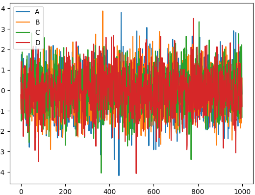
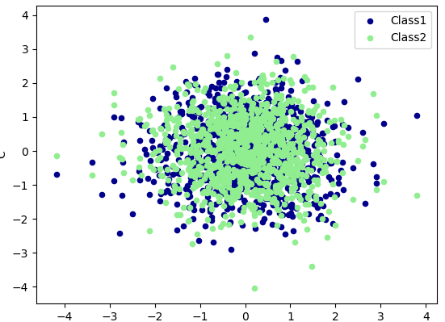

Pandas进阶
在上一篇中我们介绍了如何创建并访问pandas的Series和DataFrame型的数据，本篇将介绍如何对pandas数据进行操作，掌握这些操作之后，基本可以处理大多数的数据了。首先，导入本篇中使用到的模块：
import numpy as np |
为了看数据方便一些，我们设置一下输出屏幕的宽度pd.set_option('display.width', 200)
数据创建的其他方式
数据结构的创建不止是上篇中介绍的标准形式，本篇再介绍几种。例如，我们可以创建一个以日期为元素的Series：
In [3]: dates = pd.date_range('20150101', periods=5) |
将这个日期Series作为索引赋给一个DataFrame：
In [6]: df = pd.DataFrame(np.random.randn(5, 4),index=dates,columns=list('ABCD')) |
只要是能转换成Series的对象，都可以用于创建DataFrame：
In [8]: df2 = pd.DataFrame({ 'A' : 1., 'B': pd.Timestamp('20150214'), 'C': pd.Series(1.6,index=list(range(4)),dtype='float64'), 'D' : np.array([4] * 4, dtype='int64'), 'E' : 'hello pandas!' }) |
Pandas 处理丢失数据
有时候我们导入或处理数据, 会产生一些空的或者是 NaN 数据,如何删除或者是填补这些 NaN 数据就是我们今天所要提到的内容.
建立了一个6X4的矩阵数据并且把两个位置置为空.
In [13]: dates = pd.date_range('20130101', periods=6) |
pd.dropna()
如果想直接去掉有 NaN 的行或列, 可以使用 dropna
In [15]: df.dropna( |
pd.fillna()
如果是将 NaN 的值用其他值代替, 比如代替成 0:
In [16]: df.fillna(value=0) |
pd.isnull()
判断是否有缺失数据 NaN, 为 True 表示缺失数据:
In [17]: df.isnull() |
检测在数据中是否存在 NaN, 如果存在就返回 True:
In [18]: np.any(df.isnull()) == True |
Pandas 导入导出
pandas可以读取与存取的资料格式有很多种，像csv、excel、json、html与pickle等…， 详细请看官方说明文件
#读取csv |
Pandas 合并 concat
pandas处理多组数据的时候往往会要用到数据的合并处理,使用 concat是一种基本的合并方式.而且concat中有很多参数可以调整,合并成你想要的数据形式.
axis (合并方向)
axis=0是预设值，因此未设定任何参数时，函数默认axis=0。
In [21]: #定义资料集 |
仔细观察会发现结果的index是0, 1, 2, 0, 1, 2, 0, 1, 2，若要将index重置，请看下面
In [24]: res = pd.concat([df1, df2, df3], axis=0, ignore_index=True) |
join (合并方式)
join=’outer’为预设值，因此未设定任何参数时，函数默认join=’outer’。此方式是依照column来做纵向合并，有相同的column上下合并在一起，其他独自的column个自成列，原本没有值的位置皆以NaN填充。
纵向”外”合并df1与df2
In [27]: df1 = pd.DataFrame(np.ones((3,4))*0, columns=['a','b','c','d'], index=[1,2,3]) |
纵向”内”合并df1与df2
In [32]: res = pd.concat([df1, df2], axis=0, join='inner') |
重置index
In [34]: res = pd.concat([df1, df2], axis=0, join='inner', ignore_index=True) |
join_axes (依照 axis 合并)
#依照`df1.index`进行横向合并 |
append (添加数据)
In [41]: #将df2合并到df1的下面，以及重置index，并打印出结果 |
Pandas plot 出图
这次我们讲如何将数据可视化. 首先import我们需要用到的模块，除了 pandas，我们也需要使用 numpy 生成一些数据，这节里使用的 matplotlib 仅仅是用来 show 图片的, 即 plt.show()。
import pandas as pd |
今天我们主要是学习如何 plot data
创建一个Series
这是一个线性的数据，我们随机生成1000个数据，Series 默认的 index 就是从0开始的整数，但是这里我显式赋值以便让大家看的更清楚
In [48]: data = pd.Series(np.random.randn(1000),index=np.arange(1000)) |
就这么简单，熟悉 matplotlib 的朋友知道如果需要plot一个数据，我们可以使用 plt.plot(x=, y=)，把x,y的数据作为参数存进去，但是data本来就是一个数据，所以我们可以直接plot。 生成的结果就是下图：
Dataframe 可视化
我们生成一个1000*4 的DataFrame，并对他们累加
In [57]: data = pd.DataFrame(np.random.randn(1000,4),index=np.arange(1000),columns=list("ABCD")) |

这个就是我们刚刚生成的4个column的数据，因为有4组数据，所以4组数据会分别plot出来。plot 可以指定很多参数，具体的用法大家可以自己查一下这里
除了plot，我经常会用到还有scatter，这个会显示散点图，首先给大家说一下在 pandas 中有多少种方法:
- bar
- hist
- box
- kde
- area
- scatter
- hexbin
但是我们今天不会一一介绍，主要说一下 plot 和 scatter. 因为scatter只有x，y两个属性，我们我们就可以分别给x, y指定数据
In [63]: ax = data.plot.scatter(x='A',y='B',color='DarkBlue',label='Class1') |
然后我们在可以再画一个在同一个ax上面，选择不一样的数据列，不同的 color 和 label
In [64]: data.plot.scatter(x='A',y='C',color='LightGreen',label='Class2',ax=ax) |
下面就是我plot出来的图片
